Parcours « cas-limites » étape 1 (goto) : HTTP 404 : GET http://localhost:3100/_vercel/speed-insights/script.js ; console.error : Failed to load resource: the server responded with a status of 404 (Not Found) ; console.error : Refused to execute script from 'http://localhost:3100/_vercel/speed-insights/script.js' because its MIME type ('text/plain') is not executable, and strict MIME type checking is enabled. ; requête échouée : GET http://localhost:3100/_vercel/speed-insights/script.js (net::ERR_ABORTED) ; requête échouée : GET http://localhost:3100/notes?_rsc=T_ekS75814BLP_hn (net::ERR_ABORTED)
Parcours « cas-limites » étape 7 (wait) : requête échouée : GET http://localhost:3100/notes?_rsc=gFW0MxFV8ywPcvsL (net::ERR_ABORTED) ; requête échouée : POST http://localhost:3100/taches (net::ERR_ABORTED) ; requête échouée : POST http://localhost:3100/taches (net::ERR_ABORTED)
Parcours « completer-et-sous-taches » étape 1 (goto) : HTTP 404 : GET http://localhost:3100/_vercel/speed-insights/script.js ; console.error : Failed to load resource: the server responded with a status of 404 (Not Found) ; console.error : Refused to execute script from 'http://localhost:3100/_vercel/speed-insights/script.js' because its MIME type ('text/plain') is not executable, and strict MIME type checking is enabled. ; requête échouée : GET http://localhost:3100/_vercel/speed-insights/script.js (net::ERR_ABORTED) ; requête échouée : GET http://localhost:3100/notes?_rsc=T_ekS75814BLP_hn (net::ERR_ABORTED)
Parcours « completer-et-sous-taches » étape 7 (reload) : HTTP 404 : GET http://localhost:3100/_vercel/speed-insights/script.js ; console.error : Failed to load resource: the server responded with a status of 404 (Not Found) ; console.error : Refused to execute script from 'http://localhost:3100/_vercel/speed-insights/script.js' because its MIME type ('text/html') is not executable, and strict MIME type checking is enabled. ; requête échouée : GET http://localhost:3100/_vercel/speed-insights/script.js (net::ERR_ABORTED)
Parcours « creer-cocher » étape 1 (goto) : HTTP 404 : GET http://localhost:3100/_vercel/speed-insights/script.js ; console.error : Failed to load resource: the server responded with a status of 404 (Not Found) ; console.error : Refused to execute script from 'http://localhost:3100/_vercel/speed-insights/script.js' because its MIME type ('text/plain') is not executable, and strict MIME type checking is enabled. ; requête échouée : GET http://localhost:3100/_vercel/speed-insights/script.js (net::ERR_ABORTED) ; requête échouée : GET http://localhost:3100/notes?_rsc=T_ekS75814BLP_hn (net::ERR_ABORTED)
Parcours « creer-cocher » étape 7 (reload) : requête échouée : POST http://localhost:3100/taches (net::ERR_ABORTED) ; HTTP 404 : GET http://localhost:3100/_vercel/speed-insights/script.js ; console.error : Failed to load resource: the server responded with a status of 404 (Not Found) ; console.error : Refused to execute script from 'http://localhost:3100/_vercel/speed-insights/script.js' because its MIME type ('text/html') is not executable, and strict MIME type checking is enabled. ; requête échouée : GET http://localhost:3100/_vercel/speed-insights/script.js (net::ERR_ABORTED)
Parcours « creer-cocher » étape 11 (reload) : requête échouée : POST http://localhost:3100/taches (net::ERR_ABORTED) ; HTTP 404 : GET http://localhost:3100/_vercel/speed-insights/script.js ; console.error : Failed to load resource: the server responded with a status of 404 (Not Found) ; console.error : Refused to execute script from 'http://localhost:3100/_vercel/speed-insights/script.js' because its MIME type ('text/html') is not executable, and strict MIME type checking is enabled. ; requête échouée : GET http://localhost:3100/_vercel/speed-insights/script.js (net::ERR_ABORTED) ; requête échouée : GET http://localhost:3100/notes?_rsc=T_ekS75814BLP_hn (net::ERR_ABORTED)
Parcours « creer-tache » étape 1 (goto) : HTTP 404 : GET http://localhost:3100/_vercel/speed-insights/script.js ; console.error : Failed to load resource: the server responded with a status of 404 (Not Found) ; console.error : Refused to execute script from 'http://localhost:3100/_vercel/speed-insights/script.js' because its MIME type ('text/plain') is not executable, and strict MIME type checking is enabled. ; requête échouée : GET http://localhost:3100/_vercel/speed-insights/script.js (net::ERR_ABORTED) ; requête échouée : GET http://localhost:3100/notes?_rsc=T_ekS75814BLP_hn (net::ERR_ABORTED)
Parcours « creer-tache » étape 7 (wait) : requête échouée : GET http://localhost:3100/notes?_rsc=gFW0MxFV8ywPcvsL (net::ERR_ABORTED) ; requête échouée : POST http://localhost:3100/taches (net::ERR_ABORTED) ; requête échouée : POST http://localhost:3100/taches (net::ERR_ABORTED)
Parcours « creer-tache » étape 8 (reload) : HTTP 404 : GET http://localhost:3100/_vercel/speed-insights/script.js ; console.error : Failed to load resource: the server responded with a status of 404 (Not Found) ; console.error : Refused to execute script from 'http://localhost:3100/_vercel/speed-insights/script.js' because its MIME type ('text/html') is not executable, and strict MIME type checking is enabled. ; requête échouée : GET http://localhost:3100/_vercel/speed-insights/script.js (net::ERR_ABORTED)
Parcours « recherche-filtres-listes » étape 1 (goto) : HTTP 404 : GET http://localhost:3100/_vercel/speed-insights/script.js ; console.error : Failed to load resource: the server responded with a status of 404 (Not Found) ; console.error : Refused to execute script from 'http://localhost:3100/_vercel/speed-insights/script.js' because its MIME type ('text/plain') is not executable, and strict MIME type checking is enabled. ; requête échouée : GET http://localhost:3100/_vercel/speed-insights/script.js (net::ERR_ABORTED) ; requête échouée : GET http://localhost:3100/notes?_rsc=T_ekS75814BLP_hn (net::ERR_ABORTED)
Parcours « recherche-filtres-listes » étape 7 (goto) : HTTP 404 : GET http://localhost:3100/_vercel/speed-insights/script.js ; console.error : Failed to load resource: the server responded with a status of 404 (Not Found) ; console.error : Refused to execute script from 'http://localhost:3100/_vercel/speed-insights/script.js' because its MIME type ('text/html') is not executable, and strict MIME type checking is enabled. ; requête échouée : GET http://localhost:3100/_vercel/speed-insights/script.js (net::ERR_ABORTED) ; requête échouée : GET http://localhost:3100/notes?_rsc=lC6blD91bEMl2jV9 (net::ERR_ABORTED)
Parcours « recherche-filtres-listes » étape 9 (back) : HTTP 404 : GET http://localhost:3100/_vercel/speed-insights/script.js ; console.error : Failed to load resource: the server responded with a status of 404 (Not Found) ; console.error : Refused to execute script from 'http://localhost:3100/_vercel/speed-insights/script.js' because its MIME type ('text/html') is not executable, and strict MIME type checking is enabled. ; requête échouée : GET http://localhost:3100/_vercel/speed-insights/script.js (net::ERR_ABORTED) ; requête échouée : GET http://localhost:3100/notes?_rsc=T_ekS75814BLP_hn (net::ERR_ABORTED)
Parcours « recherche-sombre » étape 1 (goto) : HTTP 404 : GET http://localhost:3100/_vercel/speed-insights/script.js ; console.error : Failed to load resource: the server responded with a status of 404 (Not Found) ; console.error : Refused to execute script from 'http://localhost:3100/_vercel/speed-insights/script.js' because its MIME type ('text/plain') is not executable, and strict MIME type checking is enabled. ; requête échouée : GET http://localhost:3100/_vercel/speed-insights/script.js (net::ERR_ABORTED) ; requête échouée : GET http://localhost:3100/notes?_rsc=T_ekS75814BLP_hn (net::ERR_ABORTED)
Parcours « recherche-sombre » étape 7 (goto) : HTTP 404 : GET http://localhost:3100/_vercel/speed-insights/script.js ; console.error : Failed to load resource: the server responded with a status of 404 (Not Found) ; console.error : Refused to execute script from 'http://localhost:3100/_vercel/speed-insights/script.js' because its MIME type ('text/html') is not executable, and strict MIME type checking is enabled. ; requête échouée : GET http://localhost:3100/_vercel/speed-insights/script.js (net::ERR_ABORTED)
Parcours « titre-vide-et-long » étape 1 (goto) : HTTP 404 : GET http://localhost:3100/_vercel/speed-insights/script.js ; console.error : Failed to load resource: the server responded with a status of 404 (Not Found) ; console.error : Refused to execute script from 'http://localhost:3100/_vercel/speed-insights/script.js' because its MIME type ('text/plain') is not executable, and strict MIME type checking is enabled. ; requête échouée : GET http://localhost:3100/_vercel/speed-insights/script.js (net::ERR_ABORTED)
1. goto ouvrir — anomalie ⚠ HTTP 404 : GET http://localhost:3100/_vercel/speed-insights/script.js ⚠ console.error : Failed to load resource: the server responded with a status of 404 (Not Found) ⚠ console.error : Refused to execute script from 'http://localhost:3100/_vercel/speed-insights/script.js' because its MIME type ('text/plain') is not executable, and strict MIME type checking is enabled. ⚠ requête échouée : GET http://localhost:3100/_vercel/speed-insights/script.js (net::ERR_ABORTED) ⚠ requête échouée : GET http://localhost:3100/notes?_rsc=T_ekS75814BLP_hn (net::ERR_ABORTED)2. click ouvrir le + — ok3. click titre vide — ok
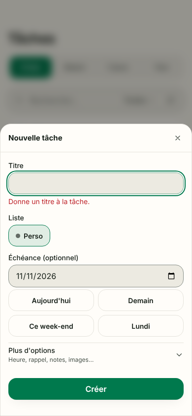
4. screenshot erreur titre vide ? — ok
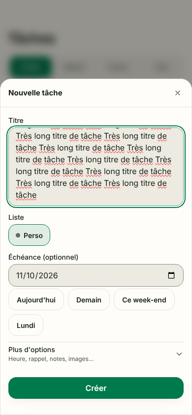
5. fill titre très long — ok
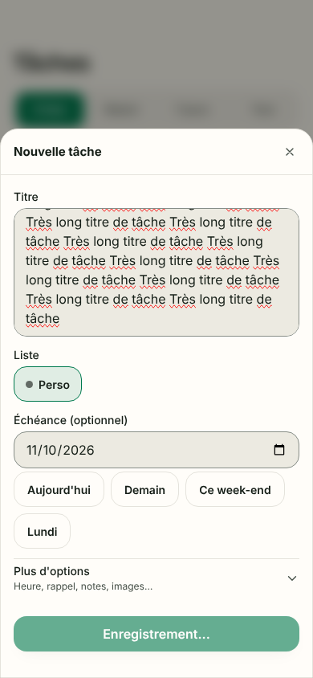
6. dblclick double clic — ok
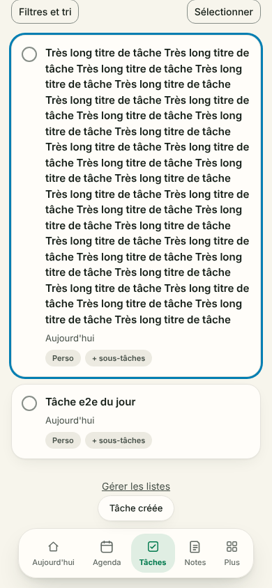
7. wait http://localhost:3100/taches — anomalie ⚠ requête échouée : GET http://localhost:3100/notes?_rsc=gFW0MxFV8ywPcvsL (net::ERR_ABORTED) ⚠ requête échouée : POST http://localhost:3100/taches (net::ERR_ABORTED) ⚠ requête échouée : POST http://localhost:3100/taches (net::ERR_ABORTED)
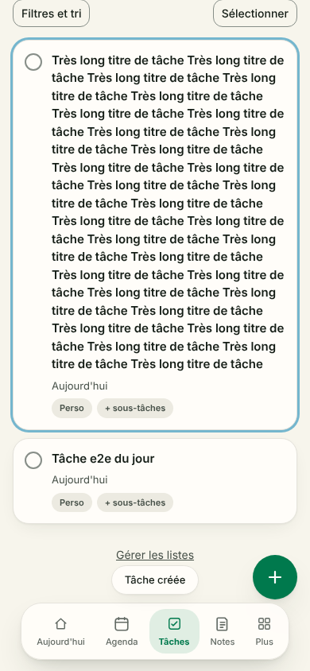
8. screenshot liste avec titre long — ok
completer-et-sous-taches
1. goto http://localhost:3100/taches — anomalie ⚠ HTTP 404 : GET http://localhost:3100/_vercel/speed-insights/script.js ⚠ console.error : Failed to load resource: the server responded with a status of 404 (Not Found) ⚠ console.error : Refused to execute script from 'http://localhost:3100/_vercel/speed-insights/script.js' because its MIME type ('text/plain') is not executable, and strict MIME type checking is enabled. ⚠ requête échouée : GET http://localhost:3100/_vercel/speed-insights/script.js (net::ERR_ABORTED) ⚠ requête échouée : GET http://localhost:3100/notes?_rsc=T_ekS75814BLP_hn (net::ERR_ABORTED)
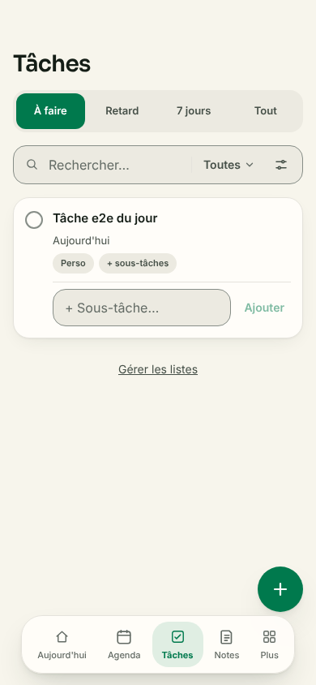
2. click role=button[name=/\+ sous-tâches/i] — ok3. fill role=textbox[name=/Nouvelle sous-tâche/i] — ok
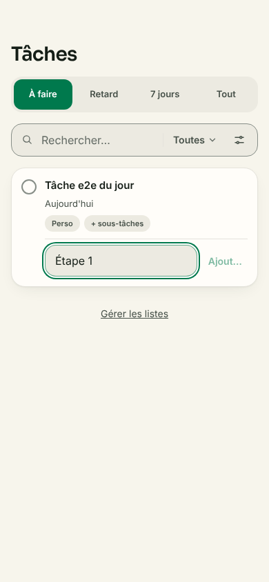
4. press http://localhost:3100/taches — ok
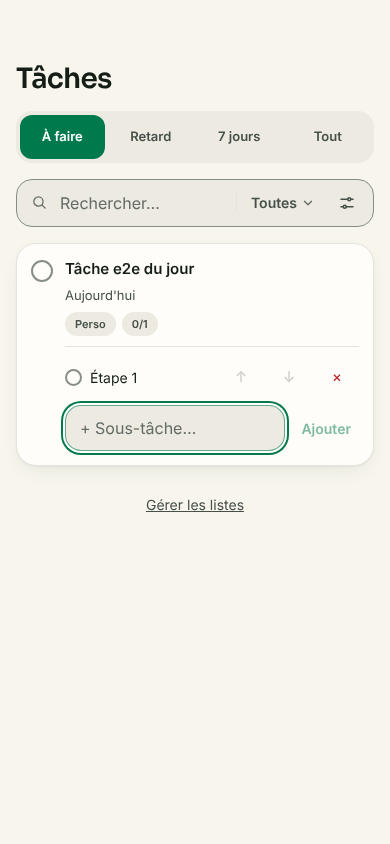
5. wait laisser finir l'envoi — anomalie ⚠ requête échouée : POST http://localhost:3100/taches (net::ERR_ABORTED)6. expect_text http://localhost:3100/taches — ok
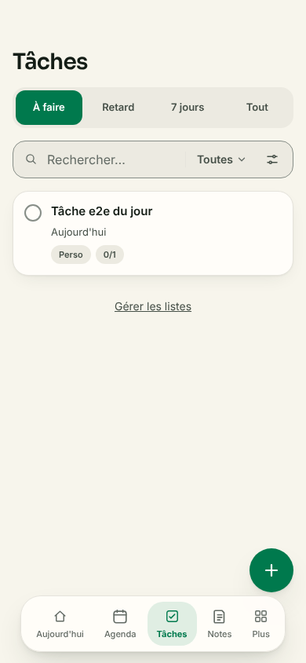
7. reload http://localhost:3100/taches — anomalie ⚠ HTTP 404 : GET http://localhost:3100/_vercel/speed-insights/script.js ⚠ console.error : Failed to load resource: the server responded with a status of 404 (Not Found) ⚠ console.error : Refused to execute script from 'http://localhost:3100/_vercel/speed-insights/script.js' because its MIME type ('text/html') is not executable, and strict MIME type checking is enabled. ⚠ requête échouée : GET http://localhost:3100/_vercel/speed-insights/script.js (net::ERR_ABORTED)8. expect_text persistance — ok
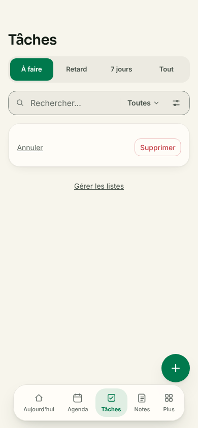
9. click ouvrir/terminer — ok
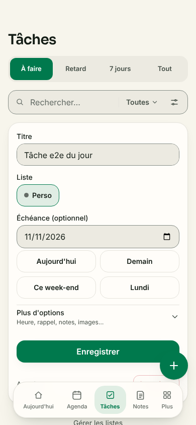
10. screenshot http://localhost:3100/taches — ok
creer-cocher
1. goto ouvrir — anomalie ⚠ HTTP 404 : GET http://localhost:3100/_vercel/speed-insights/script.js ⚠ console.error : Failed to load resource: the server responded with a status of 404 (Not Found) ⚠ console.error : Refused to execute script from 'http://localhost:3100/_vercel/speed-insights/script.js' because its MIME type ('text/plain') is not executable, and strict MIME type checking is enabled. ⚠ requête échouée : GET http://localhost:3100/_vercel/speed-insights/script.js (net::ERR_ABORTED) ⚠ requête échouée : GET http://localhost:3100/notes?_rsc=T_ekS75814BLP_hn (net::ERR_ABORTED)
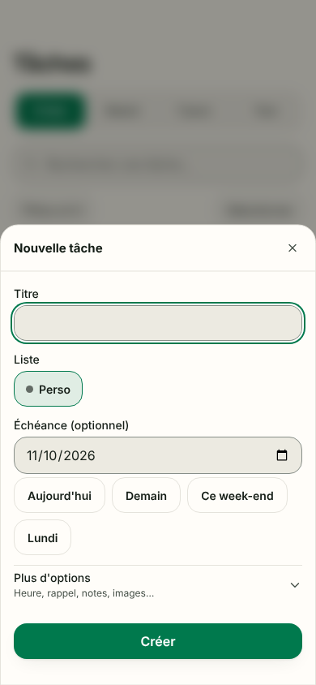
2. click ouvrir le + — ok
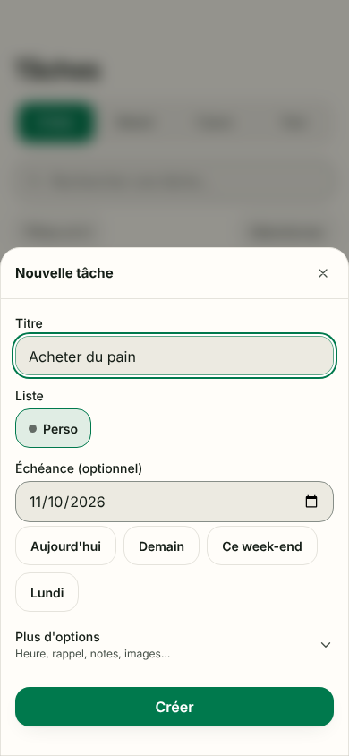
3. fill titre — ok4. click créer — ok5. expect_absent attendre la fin de l'envoi — ok6. expect_text http://localhost:3100/taches — ok7. reload persistance — anomalie ⚠ requête échouée : POST http://localhost:3100/taches (net::ERR_ABORTED) ⚠ HTTP 404 : GET http://localhost:3100/_vercel/speed-insights/script.js ⚠ console.error : Failed to load resource: the server responded with a status of 404 (Not Found) ⚠ console.error : Refused to execute script from 'http://localhost:3100/_vercel/speed-insights/script.js' because its MIME type ('text/html') is not executable, and strict MIME type checking is enabled. ⚠ requête échouée : GET http://localhost:3100/_vercel/speed-insights/script.js (net::ERR_ABORTED)
9. click cocher — ok10. screenshot après coche — ok11. reload persistance du coché — anomalie ⚠ requête échouée : POST http://localhost:3100/taches (net::ERR_ABORTED) ⚠ HTTP 404 : GET http://localhost:3100/_vercel/speed-insights/script.js ⚠ console.error : Failed to load resource: the server responded with a status of 404 (Not Found) ⚠ console.error : Refused to execute script from 'http://localhost:3100/_vercel/speed-insights/script.js' because its MIME type ('text/html') is not executable, and strict MIME type checking is enabled. ⚠ requête échouée : GET http://localhost:3100/_vercel/speed-insights/script.js (net::ERR_ABORTED) ⚠ requête échouée : GET http://localhost:3100/notes?_rsc=T_ekS75814BLP_hn (net::ERR_ABORTED)12. screenshot état après reload — ok
creer-tache
1. goto ouvrir — anomalie ⚠ HTTP 404 : GET http://localhost:3100/_vercel/speed-insights/script.js ⚠ console.error : Failed to load resource: the server responded with a status of 404 (Not Found) ⚠ console.error : Refused to execute script from 'http://localhost:3100/_vercel/speed-insights/script.js' because its MIME type ('text/plain') is not executable, and strict MIME type checking is enabled. ⚠ requête échouée : GET http://localhost:3100/_vercel/speed-insights/script.js (net::ERR_ABORTED) ⚠ requête échouée : GET http://localhost:3100/notes?_rsc=T_ekS75814BLP_hn (net::ERR_ABORTED)
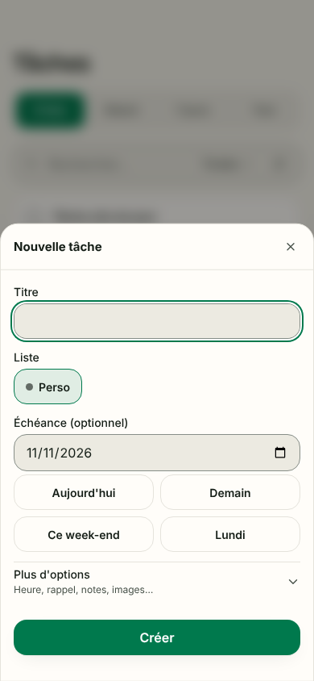
2. click ouvrir le formulaire — ok
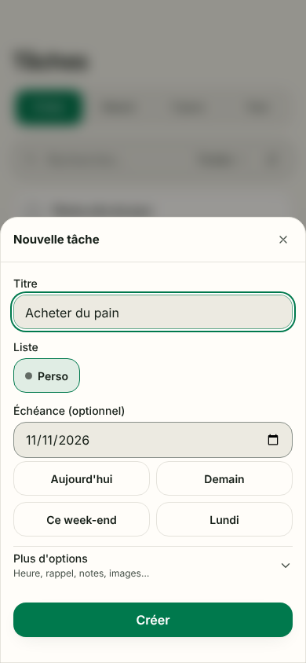
3. fill role=textbox[name=/Titre/i] — ok
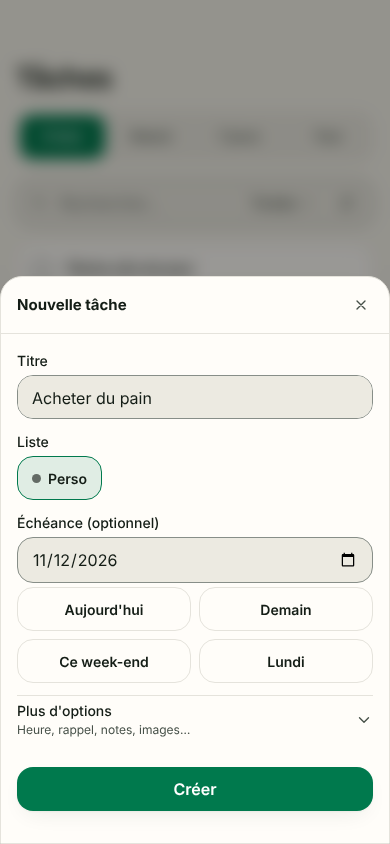
4. click role=button[name=/échéance à demain/i] — ok5. click role=button[name=/^Créer$/] — ok6. screenshot envoi en cours — ok
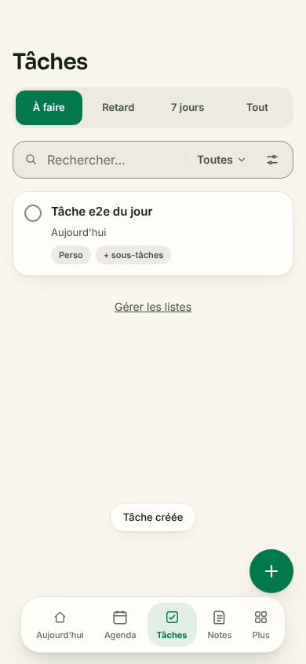
7. wait laisser finir l'envoi (faux Supabase ≈ 1,9 s) — anomalie ⚠ requête échouée : GET http://localhost:3100/notes?_rsc=gFW0MxFV8ywPcvsL (net::ERR_ABORTED) ⚠ requête échouée : POST http://localhost:3100/taches (net::ERR_ABORTED) ⚠ requête échouée : POST http://localhost:3100/taches (net::ERR_ABORTED)8. reload http://localhost:3100/taches — anomalie ⚠ HTTP 404 : GET http://localhost:3100/_vercel/speed-insights/script.js ⚠ console.error : Failed to load resource: the server responded with a status of 404 (Not Found) ⚠ console.error : Refused to execute script from 'http://localhost:3100/_vercel/speed-insights/script.js' because its MIME type ('text/html') is not executable, and strict MIME type checking is enabled. ⚠ requête échouée : GET http://localhost:3100/_vercel/speed-insights/script.js (net::ERR_ABORTED)
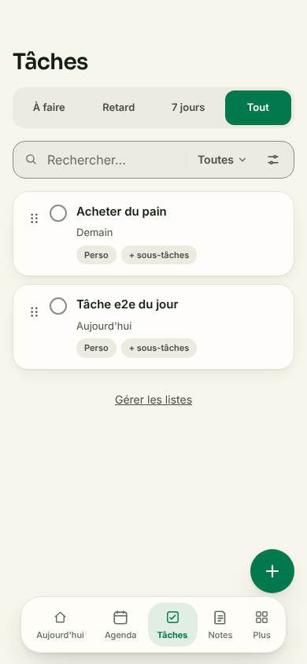
9. click vue Tout — ok10. expect_text persistance — ok
recherche-filtres-listes
1. goto http://localhost:3100/taches — anomalie ⚠ HTTP 404 : GET http://localhost:3100/_vercel/speed-insights/script.js ⚠ console.error : Failed to load resource: the server responded with a status of 404 (Not Found) ⚠ console.error : Refused to execute script from 'http://localhost:3100/_vercel/speed-insights/script.js' because its MIME type ('text/plain') is not executable, and strict MIME type checking is enabled. ⚠ requête échouée : GET http://localhost:3100/_vercel/speed-insights/script.js (net::ERR_ABORTED) ⚠ requête échouée : GET http://localhost:3100/notes?_rsc=T_ekS75814BLP_hn (net::ERR_ABORTED)
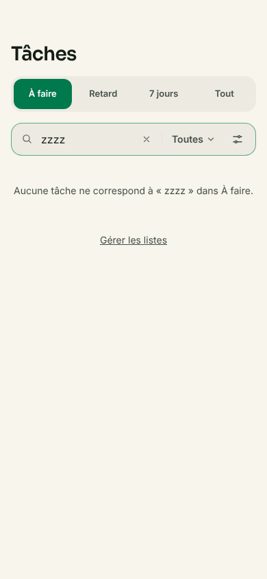
2. fill role=textbox[name=/Rechercher une tâche/i] — ok3. screenshot aucun résultat — ok
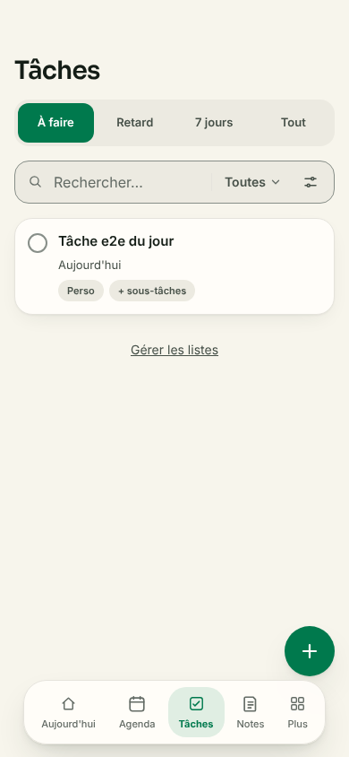
4. click role=button[name=/Effacer la recherche/i] — ok5. click role=button[name=/Filtres et tri/i] — ok6. screenshot panneau filtres — ok7. goto http://localhost:3100/taches/listes — anomalie ⚠ HTTP 404 : GET http://localhost:3100/_vercel/speed-insights/script.js ⚠ console.error : Failed to load resource: the server responded with a status of 404 (Not Found) ⚠ console.error : Refused to execute script from 'http://localhost:3100/_vercel/speed-insights/script.js' because its MIME type ('text/html') is not executable, and strict MIME type checking is enabled. ⚠ requête échouée : GET http://localhost:3100/_vercel/speed-insights/script.js (net::ERR_ABORTED) ⚠ requête échouée : GET http://localhost:3100/notes?_rsc=lC6blD91bEMl2jV9 (net::ERR_ABORTED)
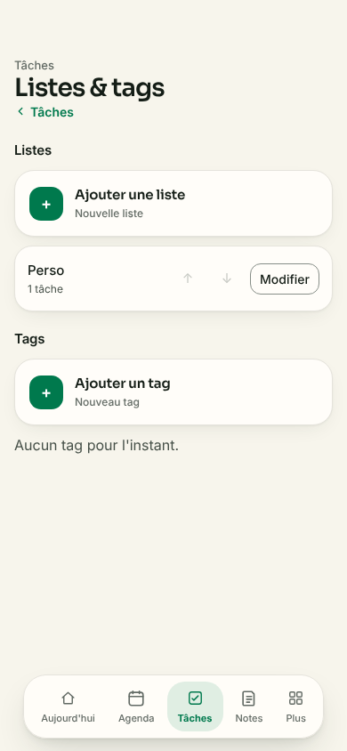
8. screenshot gérer les listes — ok
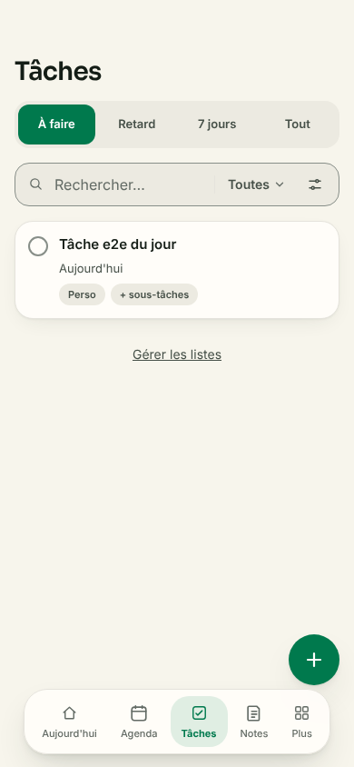
9. back http://localhost:3100/taches — anomalie ⚠ HTTP 404 : GET http://localhost:3100/_vercel/speed-insights/script.js ⚠ console.error : Failed to load resource: the server responded with a status of 404 (Not Found) ⚠ console.error : Refused to execute script from 'http://localhost:3100/_vercel/speed-insights/script.js' because its MIME type ('text/html') is not executable, and strict MIME type checking is enabled. ⚠ requête échouée : GET http://localhost:3100/_vercel/speed-insights/script.js (net::ERR_ABORTED) ⚠ requête échouée : GET http://localhost:3100/notes?_rsc=T_ekS75814BLP_hn (net::ERR_ABORTED)
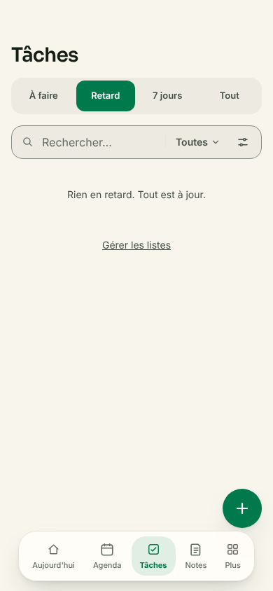
10. click role=button[name=/^Retard$/] — ok11. click role=button[name=/^7 jours$/] — ok
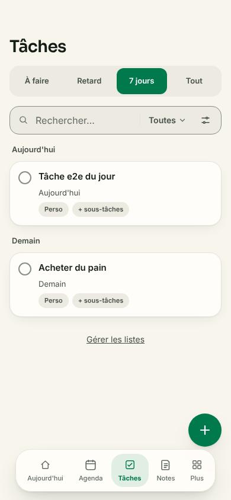
12. screenshot états vides — ok
recherche-sombre
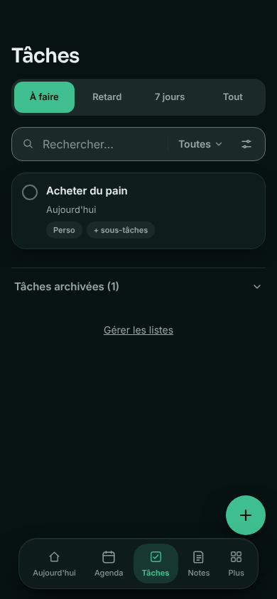
1. goto http://localhost:3100/taches — anomalie ⚠ HTTP 404 : GET http://localhost:3100/_vercel/speed-insights/script.js ⚠ console.error : Failed to load resource: the server responded with a status of 404 (Not Found) ⚠ console.error : Refused to execute script from 'http://localhost:3100/_vercel/speed-insights/script.js' because its MIME type ('text/plain') is not executable, and strict MIME type checking is enabled. ⚠ requête échouée : GET http://localhost:3100/_vercel/speed-insights/script.js (net::ERR_ABORTED) ⚠ requête échouée : GET http://localhost:3100/notes?_rsc=T_ekS75814BLP_hn (net::ERR_ABORTED)2. fill recherche sans résultat — ok
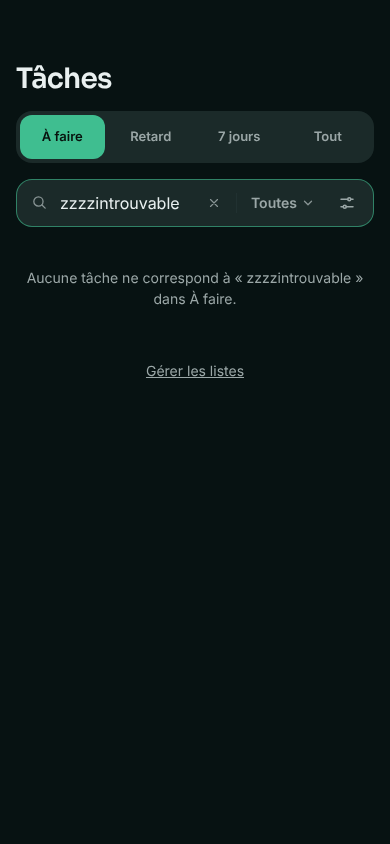
3. screenshot état vide recherche — ok
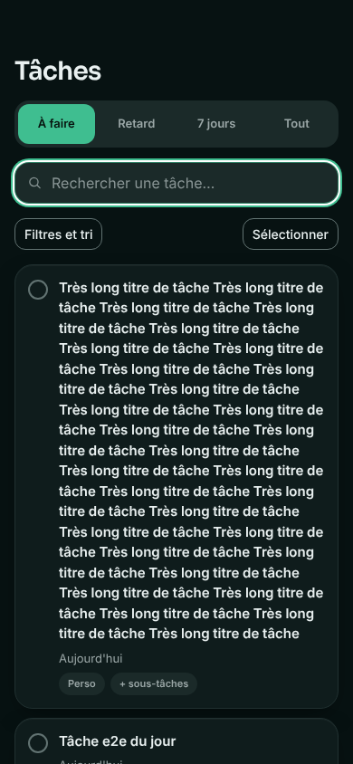
4. fill role=textbox[name="Rechercher une tâche"] — ok
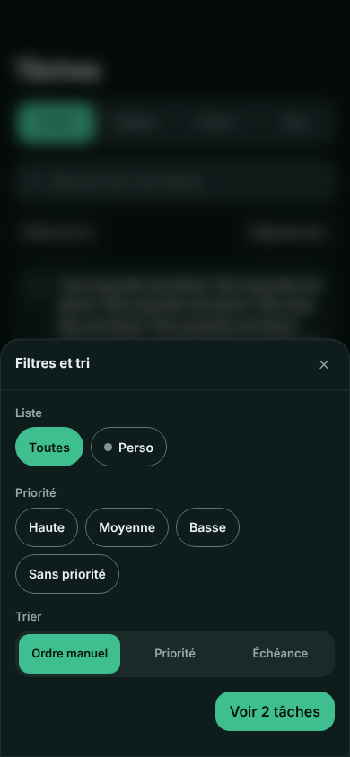
5. click role=button[name="Filtres et tri"] — ok
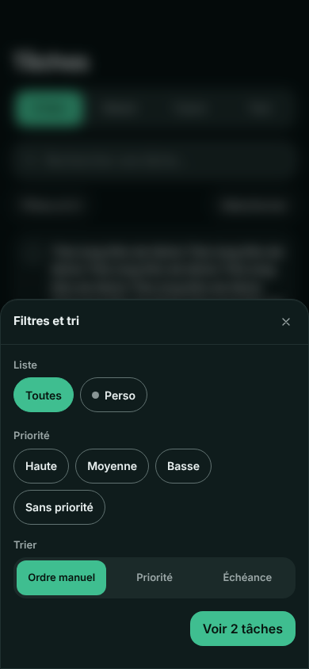
6. screenshot filtres — ok7. goto http://localhost:3100/taches/listes — anomalie ⚠ HTTP 404 : GET http://localhost:3100/_vercel/speed-insights/script.js ⚠ console.error : Failed to load resource: the server responded with a status of 404 (Not Found) ⚠ console.error : Refused to execute script from 'http://localhost:3100/_vercel/speed-insights/script.js' because its MIME type ('text/html') is not executable, and strict MIME type checking is enabled. ⚠ requête échouée : GET http://localhost:3100/_vercel/speed-insights/script.js (net::ERR_ABORTED)
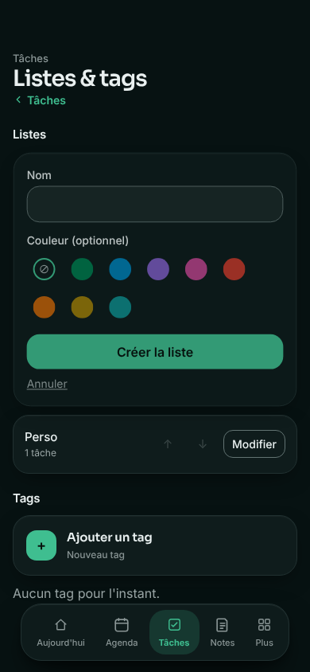
8. click role=button[name=/Ajouter une liste/i] — ok
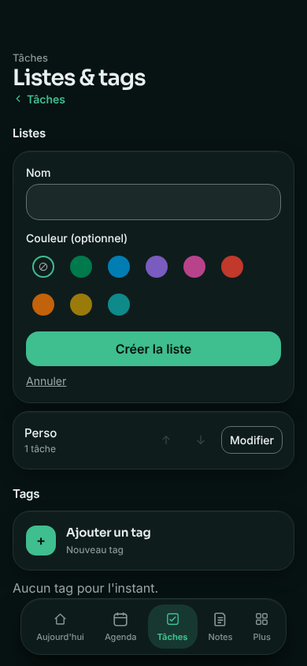
9. screenshot ajout liste — ok
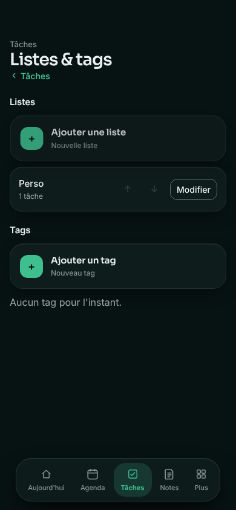
10. back http://localhost:3100/taches/listes — ok
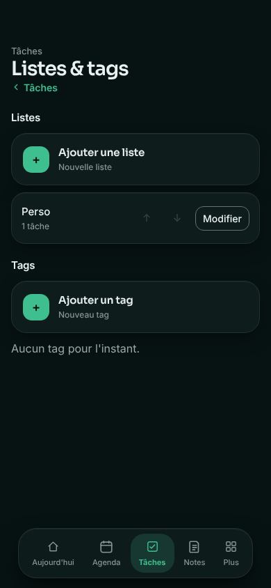
11. screenshot retour arrière — ok
titre-vide-et-long
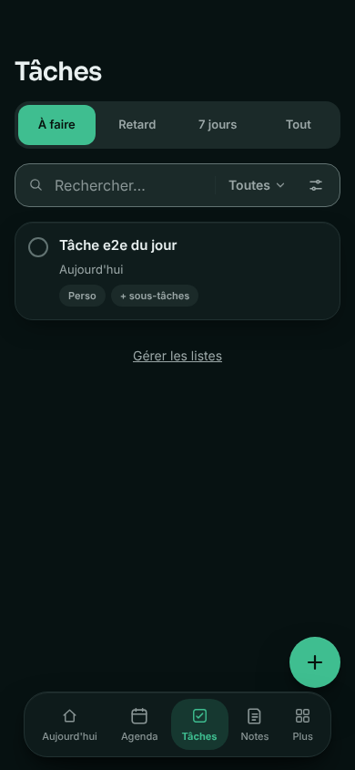
1. goto http://localhost:3100/taches — anomalie ⚠ HTTP 404 : GET http://localhost:3100/_vercel/speed-insights/script.js ⚠ console.error : Failed to load resource: the server responded with a status of 404 (Not Found) ⚠ console.error : Refused to execute script from 'http://localhost:3100/_vercel/speed-insights/script.js' because its MIME type ('text/plain') is not executable, and strict MIME type checking is enabled. ⚠ requête échouée : GET http://localhost:3100/_vercel/speed-insights/script.js (net::ERR_ABORTED)
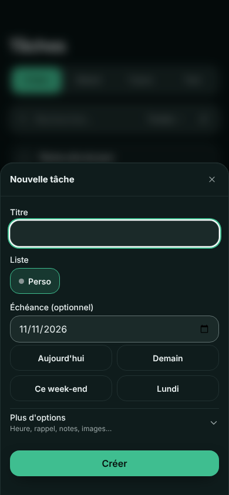
2. click ouvrir l'éventail + — ok3. click titre vide — ok